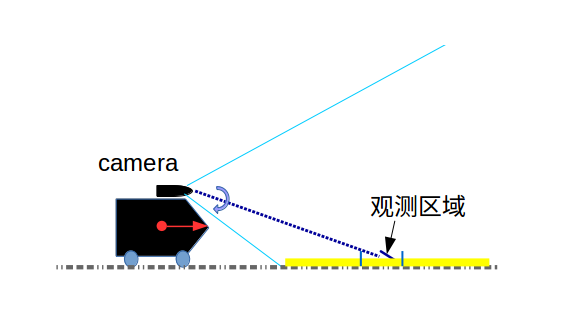
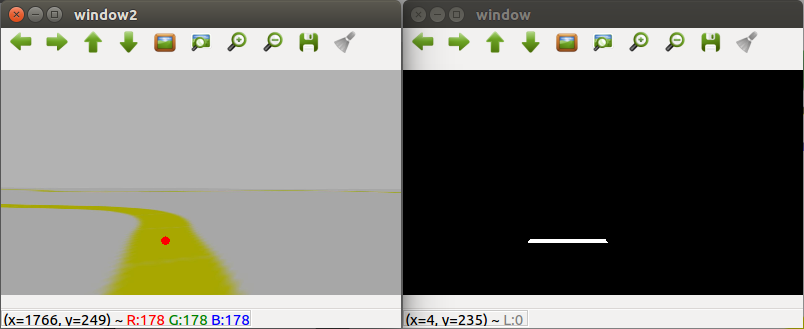

本章目标（选做）
先确认相机数据，再在不发速度的预览模式识别黄线，最后在条件满足时做 3–5 秒低速短试。可选择 Gazebo 仿真路线；没有现场授权和看车同伴时，不做实车运动。
操作边界：屏幕上的识别结果、仿真控制、实车短测和地面连续循线是不同结果类型，分别按当轮记录判断。USB 相机链路修复或代码模拟结果须在目标设备上复验后，才能作为设备表现的依据。
准备与安全条件
实验四为选做。配套材料位于同级“实验文件”文件夹；虚拟机角色和当前 ROS 环境见实验零。先确认当天要走仿真还是实车，勿混用 Gazebo 与物理相机话题。实车需确认设备归属、看车者、空地、实体停车方式和唯一速度源。
操作步骤：仿真、只预览、再决定是否短测
检查既有实验四环境
Ubuntu 本地终端A 已预置实验四目录
~/lab4_prep/工具。运行环境检查：cd ~/lab4_prep/工具 bash lab4.sh check继续：交付根目录
开工说明.md中“各实验能从哪里开始”表显示实验四视觉 Docker 镜像已就绪。若该表说明镜像仍在构建或缺失，先等待并按表处理，不进入后续仿真步骤。选择仿真路线并启动
Ubuntu 本地终端 A纯仿真运行
cd ~/lab4_prep/工具、bash lab4.sh sim。继续：进入 SIM 容器提示符。仿真 master 使用端口 11441；若后续终端显示实车 11311，停止并确认当前路线。
启动 Gazebo 课程场景
SIM 容器终端 A运行：
roslaunch -p 11441 line_follow_lab4 course.launch继续：Gazebo 场景和模型出现、模型稳定后再开其他终端。保留 A 运行；本操作不证明实车表现。
打开图像查看器
Ubuntu 本地终端 B运行
cd ~/lab4_prep/工具、bash lab4.sh shell-sim，在容器内运行rosrun rqt_image_view rqt_image_view。继续：下拉选择仿真图像话题并看到场景黄线。屏幕画面必须和当前仿真相符。
以仅预览模式启动识别
Ubuntu 本地终端 C另开
shell-sim，在容器内创建记录目录并运行：RUN_DIR=/lab4/data/sim_$(date +%Y%m%d_%H%M%S) mkdir -p "$RUN_DIR" echo "$RUN_DIR" rosrun line_follow_lab4 follower.py _enable_motion:=false _csv_path:="$RUN_DIR/preview.csv"继续：看到持续更新的 debug 图和 mask；此参数不创建速度发布者。保持仅预览，不因仿真画面良好就改实车。
检查识别画面
rqt_image_view依次查看
/line_follower/debug_image与/line_follower/mask。debug 图中红色中心标记应接近黄线；mask 应主要保留 ROI 中的黄线区域。继续：遮挡镜头时画面变化，黄线左右移动时误差方向符合预期。全黑、全白、旧图时留在预览排错。

教师任务书示例｜先确认黄线落在实际处理的区域里。 
教师任务书示例｜比较原图与掩码。掩码白色区域是当前阈值选出的像素。 核对图像频率与速度来源
SIM 容器 shell运行
rostopic hz /camera/rgb/image_raw观察约 10 秒，Ctrl+C 停止；再运行rostopic info /cmd_vel。继续：图像持续更新、来源是 Gazebo 相机，且控制前没有旧发布者。频率数字不单独证明每帧新鲜。
结束预览再考虑仿真控制
Ubuntu 本地终端 C按 Ctrl+C 结束预览，确认节点退出。若只需观察，可在此完成实验并保存 CSV。
继续：只有课程要求且本轮准备运动时，才进入下一项；预览本身不发速度。
仿真短时控制（可选）
SIM 容器 shell确认唯一速度控制者和空旷仿真场景后，按既有操作单建立新记录目录并运行：
RUN_DIR=/lab4/data/sim_$(date +%Y%m%d_%H%M%S) mkdir -p "$RUN_DIR" echo "$RUN_DIR" rosrun line_follow_lab4 follower.py _enable_motion:=true \ _linear_speed:=0.05 _kp:=0.001 _max_angular_speed:=0.4 \ _csv_path:="$RUN_DIR/control.csv"有失线或方向异常立即 Ctrl+C；不把 Gazebo 结果记为实车结果。
继续：只在明确要做仿真时运行；结束后保存记录并停止场景。
停止仿真并确认窗口退出
Ubuntu 本地终端结束 follower、图像查看器和 Gazebo 终端；回本地终端运行
cd ~/lab4_prep/工具、bash lab4.sh stop-sim。继续：确认仿真会话关闭，再决定是否另开实车流程。不要在仿真活动时切网。
切到实车前核对现场网络
Windows / VMware / Ubuntu连接当天小车 Wi-Fi、桥接当前 WLAN。在 Ubuntu 本地终端依次运行
ip -4 -brief address、read -r -p '输入当天核对的本车IPv4地址：' ROBOT_IP、ip -4 route get "$ROBOT_IP"、ping -c 3 "$ROBOT_IP"。地址必须当天核对。继续：路由显示正确 Ubuntu 源地址且目标有回应；失败时停在网络检查，不照抄历史地址。
仅进入实车容器，不启动车辆
Ubuntu 本地终端依实车操作单读入当天地址后运行
LAB4_ROBOT_IP="$ROBOT_IP" bash lab4.sh real。该入口只进实车容器，不启动相机、底盘或运动。继续：容器环境显示实际车端 master 11311 和 Ubuntu 当前地址，不是仿真 11441。
保存只读相机检查
实车容器 shell A运行
bash /lab4/check_real_camera.sh。它采集节点、话题、速度源、图像 header/频率和延迟，不发速度。继续：确认相机话题为 raw
sensor_msgs/Image、新帧持续到达、时间戳合理，且 /cmd_vel 无未知发布者、底盘订阅者真实存在。脚本结束不等于相机通过。显示真实图像并核对新鲜度
实车容器 shell A按当天核实的真实 raw 话题打开 rqt_image_view；用手短暂遮挡镜头，确认画面同步变化。话题名存在或 rqt 停留最后一帧都不证明持续有新图。
继续：画面与实体环境对应且随遮挡变化。没有 raw 图像时不猜驱动启动命令，也不拿 Gazebo 图像代替。
在实车上只预览、不发速度
Ubuntu 本地终端 B / 实车容器打开
bash lab4.sh shell-real，先运行read -r -p '输入已核实的真实raw图像话题：' IMAGE_TOPIC，再建目录和启动预览：RUN_DIR=$(mktemp -d "/lab4/data/real_preview_$(date +%Y%m%d_%H%M%S)_XXXXXX") echo "$RUN_DIR" rosrun line_follow_lab4 follower.py _enable_motion:=false _image_topic:="$IMAGE_TOPIC" _csv_path:="$RUN_DIR/preview.csv"继续：mask 和中心点稳定、至少观察一分钟且 CSV 持续更新。此模式不发布底盘速度。
判断是否允许 3–5 秒实车短测
看车者 / 实车容器仅当图像新鲜、识别稳定、停车方式可用且预览节点已 Ctrl+C 退出时，先运行
rostopic info /cmd_vel。必须无其他发布者，订阅者为实体底盘。再按实车单创建新的记录目录并运行完整命令：RUN_DIR=$(mktemp -d "/lab4/data/real_control_$(date +%Y%m%d_%H%M%S)_XXXXXX")、echo "$RUN_DIR"、rosrun line_follow_lab4 follower.py _enable_motion:=true _image_topic:="$IMAGE_TOPIC" _linear_speed:=0.03 _kp:=0.001 _max_angular_speed:=0.3 _csv_path:="$RUN_DIR/control.csv"。仅运行 3–5 秒。继续：只有授权与全部检查通过才开始短测。异常方向、失线、旧帧、断流或多发布者时立即 Ctrl+C 并用实体方式停车；CSV 是软件命令，不是实测速率。
结束实车会话并保存边界
看车者 / Ubuntu 本地终端Ctrl+C 停 follower，目视确认停稳，再按实车单运行
bash lab4.sh stop-real。保存日志、CSV、原图/mask/debug 和现场视频；把软件速度命令与实体运动分开描述。收尾：停车确认后才能切网络。若使用相机链路修复版本，先按交付说明核对部署版本并完成目标设备复验。
检查与留证
- 分别保存 SIM 或 REAL 的 master、图像话题、频率、CSV 和画面。
- 实车短测留视频、参数、唯一速度源检查和停车观察；CSV 只记录软件命令。
- 分别记录实际屏幕识别、仿真运动、实车短测和持续地面循线证据，不能把它们合并为同一种结果。
常见问题
- 误进仿真 shell：检查端口，SIM 是 11441，实车应为当天车 master 11311；退出并切到正确窗口。
- 无图像话题：只读保存检查结果，确认真实相机驱动和话题；不猜启动命令。
- 频率正常但画面重复：频率不等于帧新鲜度；保存 header/延迟，不放宽保护阈值。
- mask 全黑或中心点偏离：只在 enable_motion=false 下核对视角、曝光、HSV 和 ROI。
- 有陌生 /cmd_vel publisher 或无底盘 subscriber：不运动，查明来源。
- rqt 图像冻结：查看新 CSV 和相机端输出，最后一帧停留不证明仍有数据。
收尾
先停 follower 并目视确认实体车停稳，再关闭图窗和容器。SIM/REAL 分别使用对应停止入口；保留首次异常日志，不覆盖旧轮。
本章证据范围
仿真循线、仅预览、实车短距离动作和离线相机代码检查是不同证据。只有与本轮相同设备、程序和场景对应的实际记录，才能支持相应结论；不要把离线代码检查写成相机或小车现场验证。